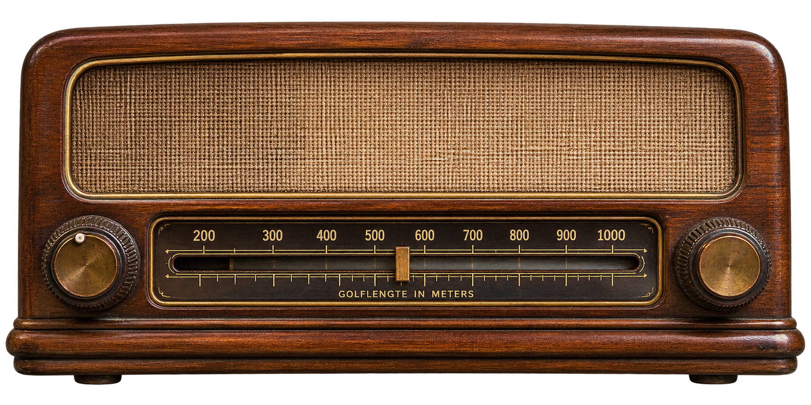

Nederland, 1925 · Een onbekende uitzending
De radio
In de kamer staat een houten radiotoestel. De wereld klinkt ineens een stuk groter wanneer je aan de afstemknop draait. Zoek op de schaal naar een uitzending.
Draai aan de linkerknop of sleep de aanwijzer over de schaal.

Afgestemd op
600 meter
Ruis op de ether…
Dit is een technische proefopstelling. De uitzendingen en geluidsfragmenten worden later toegevoegd.